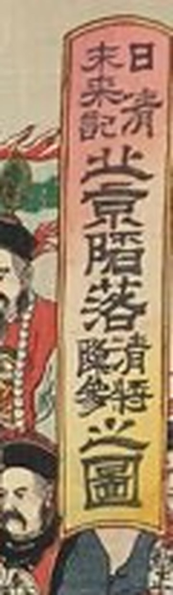
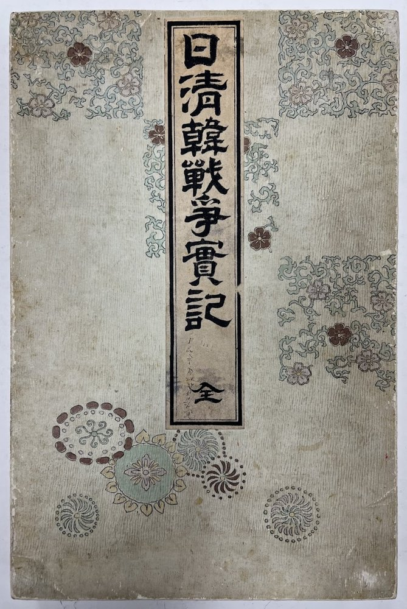
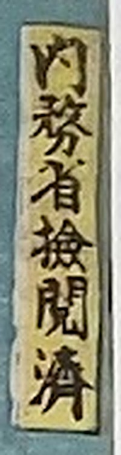

판 34 · 마지막 장未來記
'북경 함락, 청 장수 항복'을 그린 마지막 장의 제목 첫머리에 작게 적힌 세 글자입니다. 미래기, 앞으로 일어날 일의 기록. 북경은 함락되지 않았습니다. 판화가는 아직 오지 않은 승리를 미리 그려 팔았습니다.
1894년 청일전쟁 때 일본 사람들은 신문보다 먼저, 색색의 판화로 전쟁 소식을 받아 보았습니다. 전쟁 동안 이런 판화가 하루 10점꼴로 쏟아졌습니다. 이 화첩은 그 판화 32장을 엮은 책입니다. 제목은 '실제 기록'. 그런데 마지막 장은 일어나지 않은 일이었습니다.

화첩의 순서 그대로 판화 속으로 들어가, 그림이 전한 승리와 그림이 그리지 않은 사실을 함께 따라갑니다. 세 언어로 만들었고, 일본어판은 일본인의 시점으로 다시 썼습니다.
일본에서 '센소에(戰爭繪)', 전쟁 판화라 불린 색판 목판 삼련화를 엮은 화첩입니다. 한 장이 세 판을 이어 붙인 가로 그림이라, 판과 판 사이에 이음선이 지나갑니다.
판화는 승리를 그렸지만, 판 위의 작은 글자들은 다른 이야기를 합니다.

'북경 함락, 청 장수 항복'을 그린 마지막 장의 제목 첫머리에 작게 적힌 세 글자입니다. 미래기, 앞으로 일어날 일의 기록. 북경은 함락되지 않았습니다. 판화가는 아직 오지 않은 승리를 미리 그려 팔았습니다.

'내무성 검열 필'. 판 위쪽 귀퉁이의 작은 띠입니다. 사람들이 받아 본 전쟁 속보는 정부의 허락을 받은 그림이었습니다.
제목에는 조선(韓)이 들어 있고, 전쟁은 경복궁에서 시작됩니다. 1895년 시모노세키 조약 제1조는 조선의 독립을 적었습니다. 그런데 32장 어디에도 조선 사람은 주인공이 아니었습니다.
영상의 장 구성에 맞춰 묶었습니다. 판 번호는 화첩의 쪽 순서이고(14와 15는 같은 판), 제목은 판화에 적힌 원문입니다.
시각은 한국어판 기준입니다.
영상 속 이야기꾼이 전하는 사실은 아래 자료를 근거로 했습니다. 판화 속 목소리 '긴타'는 그림의 말을 전하는 허구 인물입니다. 판화 이미지는 소장품 원본을 확대만 했습니다.